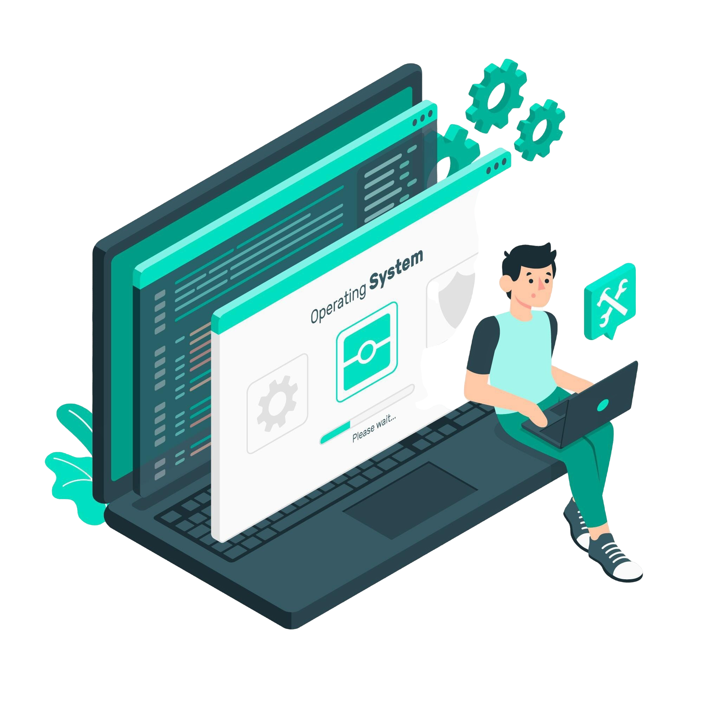

{% extends "base.html" %}

{% block tabs %}
{{ super() }}
<style>
    #hero-section {
        background-color: var(--md-primary-fg-color);
    }
    
    .hero__container {
        margin: 32px 1rem;
        color: white;
        display: flex;
        justify-content: center;
        align-items: center;
        gap: 2rem;
        padding: 2rem 0;
    }

    .hero__container .hero__content {
        flex-grow: 1;
        flex-basis: 60%;
    }

    .hero__container .hero__content h1,
    .hero__container .hero__content h4,
    .hero__container .hero__content p {
        padding: 0;
        margin: 0;
    }

    .hero__container .hero__content h4 {
        font-size: 2rem;
        font-weight: 900;
        color: var(--md-accent-fg-color);
    }

    .hero__container .hero__content h1 {
        font-size: 4rem;
        font-weight: 900;
        color: currentColor;
    }

    .hero__container .hero__content p {
        font-size: 1rem;
    }

    .hero__container .hero__content .md-button:focus,
    .hero__container .hero__content .md-button:hover {
        background-color: var(--md-accent-fg-color);
        border-color: var(--md-accent-fg-color);
        color: var(--md-default-bg-color);
    }

    .hero__container .hero__content .md-button--primary {
        background-color: var(--md-accent-fg-color);
        border-color: var(--md-accent-fg-color);
        color: var(--md-accent-bg-color);
    }

    .hero__container .hero__content .md-button--secondary {
        background-color: transparent;
        border-color: transparent;
        color: var(--md-accent-fg-color);
    }

    .hero__container .hero__image {
        flex-grow: 1;
        flex-basis: 40%;
        animation: hero-up-down 2s ease-in-out infinite alternate-reverse both;
    }

    @keyframes hero-up-down {
        0% {transform: translateY(10px)};
        100% {transform: translateY(-10px)};
    }

    @media screen and (max-width: 460px) {
        .hero__container .hero__content h4 {
            font-size: 1.25rem
        }

        .hero__container .hero__content h1 {
            font-size: 2rem
        }
    }
    
    @media screen and (max-width: 760px) {
        .hero__container .hero__content h4 {
            font-size: 1.5rem
        }

        .hero__container .hero__content h1 {
            font-size: 2.5rem
        }

        .hero__container .hero__image {
            display: none;
        }
    }

    @media screen and (max-width: 890px) {
        .hero__container .hero__content h4 {
            font-size: 1.8rem
        }

        .hero__container .hero__content h1 {
            font-size: 3rem
        }
    }
</style>

<section id="hero-section">
    <div class="md-grid md-typeset">
        <div class="hero__container">
            <div class="hero__content">
                <h4>Full-stack Developer</h1>
                <h1>
                    Agven Muharis<br>
                    Rifqi
                </h1>
                <p style="margin-top: 1rem;">Menyelesaikan permasalahan dengan <strong style="color: var(--md-accent-fg-color);">CODING</strong> adalah suatu <strong style="color: var(--md-accent-fg-color);">KESENANGAN</strong> tersendiri untuk <strong style="color: var(--md-accent-fg-color);">SAYA</strong></p>
                <div style="margin-top: 2rem;">
                    <a href="{{ page.next_page.url | url }}" title="{{ page.next_page.title | striptags }}"
                        class="md-button md-button--primary">
                        Get started
                    </a>
                    <a href="{{ config.repo_url }}" title="Pelajari lebih" class="md-button md-button--secondary">
                        Go to GitHub
                    </a>
                </div>    
            </div>
            <div class="hero__image">
                
            </div>
        </div>
    </div>
</section>
{% endblock %}

<!--

-->

{% block content %}
<!-- <style>
    .md-sidebar--primary {
        display: none
    }
    @media screen and (min-width: 60em) {
        .md-sidebar--secondary:not([hidden]) {
            display: none;
        }
    }
</style>
<section>
    <div>Content</div>
</section> -->
{% endblock %}

{% block footer %}
<footer class="md-footer">
    <div class="md-footer-meta md-typeset">
        <div class="md-footer-meta__inner md-grid">
            {% include "partials/copyright.html" %}
            {% if config.extra.social %}
                {% include "partials/social.html" %}
            {% endif %}
        </div>
    </div>
</footer>
{% endblock %}